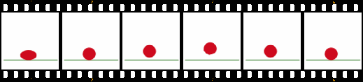
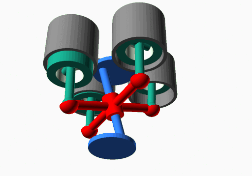
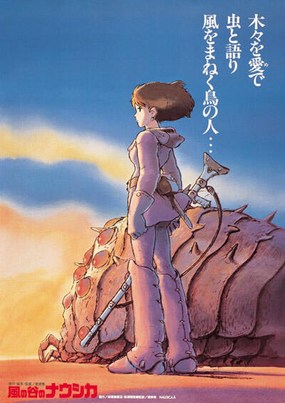
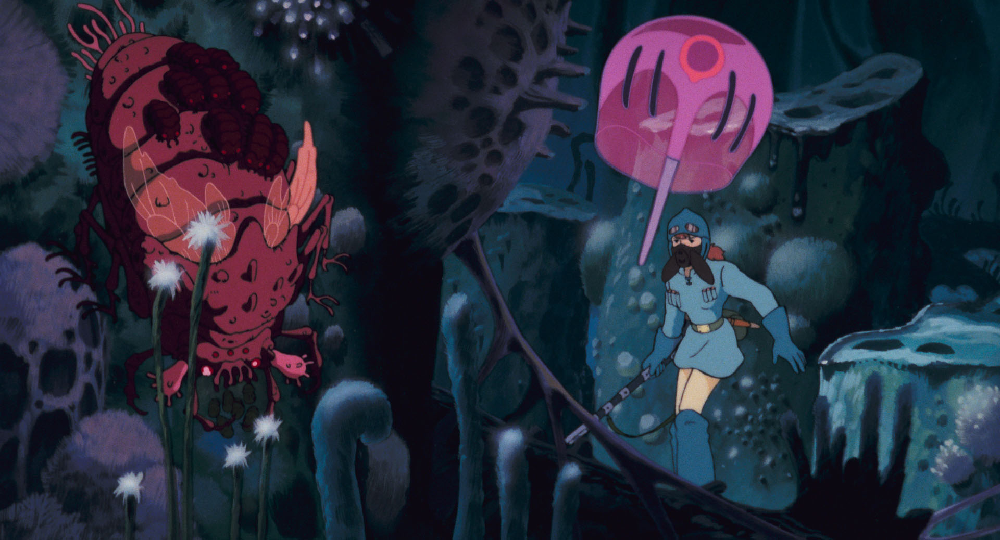
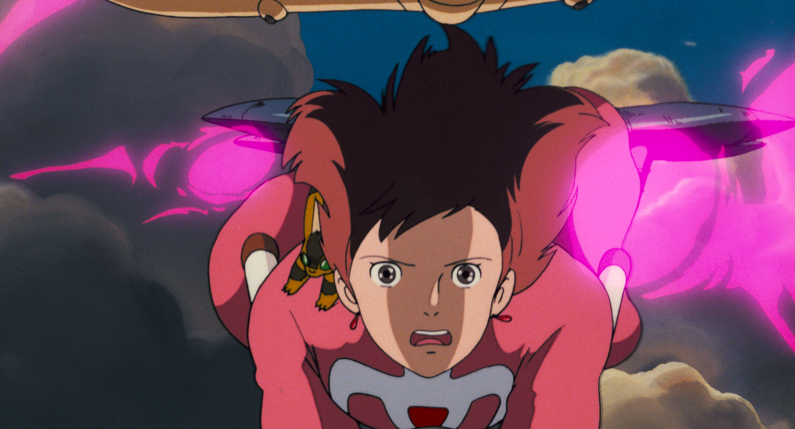
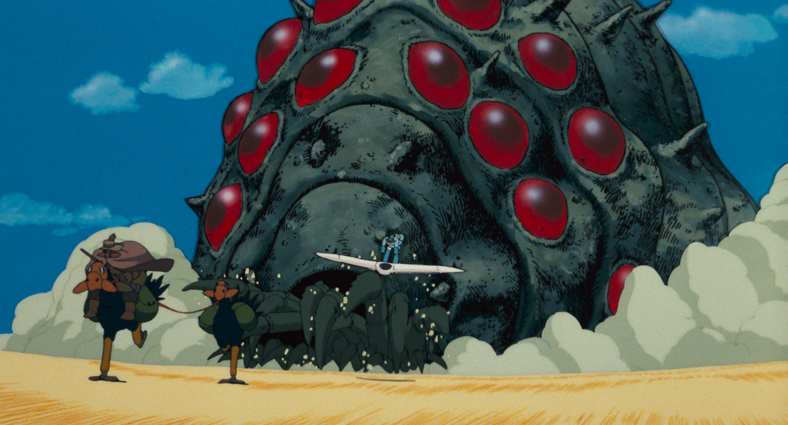

Animated Films
3.4.1 A Brief History
What is animation?
Animation is the illusion of movement created by a series of sequential images that are displayed at a rapid rate. We are familiar with animation in film or television, yet we know that animation can be created in other devices, such as flipbooks and optical toys like the zoetrope. In film animation, frame rate refers to how many frames are projected per second. Frame rate is key to animation; if the frame rate is too slow, the illusion of movement is destroyed.
2D Animation


Stop Motion Animation
Several standard techniques have been used to create animation since the origin of cinema. In 2D animation, sequential drawings are created and photographed to be played back at a specific frame rate. Stop motion has also been used since the early days of cinema. Objects are moved or adjusted a small amount, and each adjustment is photographed. More recent methods include computer-generated imagery (CGI), using hardware and software to create animation using computers for 3D animation and visual effects. In this class, we will examine animation's origins and study how animation production models and styles have evolved worldwide using these techniques.
Computer Animation (CGI)
What creates this illusion of motion that we see demonstrated in animation? British physician Peter Mark Roget first named a theory of perception called persistence of vision. He described it as a phenomenon in which an object that was moving at a particular speed would appear to be static. The term later became identified with a theory put forward by Joseph Plateau, the inventor of the optical toy the phenakistiscope, that successive images stayed on the retina of the eye, combining them, creating the illusion of motion. This theory was accepted into the 20th century when psychologist Max Wertheimer conducted experiments that led him to believe that the brain was involved in processing the information in this phenomenon, not merely the retina. In 1915, Hugo Munsterberg postulated that the apparent motion we perceive involves the brain. Subsequent research has shown that the properties of vision, such as color, motion, and depth, are transmitted to the brain from the retina and are joined together in the visual cortex.

The film below explains the theory of how we perceive motion in a set of sequential images and how it has evolved.
Persistence of Vision
The classical explanation for why animation works is known as persistence of vision. While modern research (discussed above) has shifted the emphasis from the retina to the brain, the concept remains a useful starting point:
Persistence of vision is the optical phenomenon where the illusion of motion is created because the brain interprets multiple still images as one. When multiple images appear in fast enough succession, the brain blends them into a single, persistent, moving image.
The human eye and brain can only process about 12 separate images per second, retaining an image for 1/16 of a second. If a subsequent image is replaced during this time frame, an illusion of continuity is created.
(from Maia, Alyssa, "What is Persistence of Vision Definition of an Optical Phenomenon" StudioBinder.com May 11, 2020 https://www.studiobinder.com/blog/what-is-persistence-of-vision-definition/)
Frame Rate
It is important to remember that frame rate is based on the properties of human vision, which is how our brain processes the information that our eye perceives. At a frame rate of one drawing per second, you perceive each drawing as a completely separate entity. As you increase the frame rate, you begin to see a choppy illusion of movement. At around 10-12 frames per second, the illusion is consistent, though it becomes much smoother if you keep increasing the rate. Film animation is traditionally 24 frames per second.
Frame rate (expressed in frames per second or FPS) is the frequency (rate) at which consecutive images called frames appear on a display. The term applies equally to film and video cameras, computer graphics, and motion capture systems. The frame rate may also be called the frame frequency and can be expressed in hertz.
The temporal sensitivity and resolution of human vision varies depending on the type and characteristics of visual stimulus, and it differs between individuals. The human visual system can process 10 to 12 images per second and perceive them individually, while higher rates are perceived as motion.
(from "Frame Rate" Wikipedia).
3.4.2 Japanese Animation
You cannot get very far into a conversation about animation before Hayao Miyazaki turns up. (Try it sometime. You will last about four minutes.) What makes his work useful to us here is not the wonder, though there is plenty of that. It is that he treats every frame as a decision. Wind moves in a Miyazaki film because somebody drew the wind moving, frame after frame, and the studio paid for that in labor. Watch the forest in Princess Mononoke and notice how much of it is doing nothing the plot requires. A lot of it. That is the point. The world has to be full before the story inside it can feel true.
The same discipline runs through the sound, and animation is the place where you can hear it most clearly, because animation starts from silence. There is no production audio to salvage, no accidental room tone that happened to be lovely. Every sound in the film is there because somebody chose it and placed it.
Put My Neighbor Totoro and Princess Mononoke next to each other and you can hear what that choosing buys you. Totoro gives most of its running time to insects, wind, water, and footsteps in grass, and the cumulative effect is that the countryside feels safe. Mononoke takes the same natural world and makes it a war zone: arrows, iron, animal breath. Same director, same reverence for nature, opposite emotional result. Most of that difference is happening in your ears rather than your eyes.
Princess Mononoke is the film most people reach for when they want to argue that animation can carry adult weight. Fair enough. But the ideas in it show up earlier, in a film far fewer people have seen: Nausicaä of the Valley of the Wind.

Here is the part that should interest you as an editor. Nausicaä reached the U.S. as Warriors of the Wind, and the distributor took roughly twenty minutes out of it, dropped subplots and characters, and wrote fresh dialogue over what was left. The environmental argument at the center of the film did not survive the trim. Audiences outside Japan met a confusing action cartoon and shrugged. Miyazaki did not shrug. He spent the rest of his career refusing to let U.S. distributors near a cut, and when the uncut version finally arrived in 2005 with a new dub, American viewers got to see what the argument had been about all along. Notice that nobody reshot anything to wreck the first release. Somebody just cut it. That is how much power sits in the edit.
The 2005 dub required different engineering choices than the original Japanese track. Sumi Shimamoto's performance as Nausicaä used proximity technique, moving close to the microphone for intimate moments to create bass boost and breath presence that signals psychological interiority. Alison Lohman's English performance was recorded with Western studio conventions: consistent mic distance, less frequency manipulation, more declarative delivery. The voice sits differently in the mix. Same animation. Different acoustic space.


The film also carries the argument Miyazaki kept making for the rest of his career: live action is stuck with whatever its effects can convincingly fake, while animation "illustrate[s] a world of lost possibilities." Nausicaä came out before Studio Ghibli existed, and the studio was built on the strength of it. Everything Ghibli would later be known for is already there in rough form. An environmental argument that never turns into a lecture. A protagonist who is a girl with authority rather than a girl with a destiny. Antagonists who have reasons. If you want to see a filmmaker's whole later career in outline, this is where to look.

Princess Mononoke goes back to the same material later with a bigger budget and a harder edge, and Spirited Away (2001) took the Academy Award for Best Animated Feature, still the only anime ever to do it. Not bad for a tradition that Western distributors had spent the eighties chopping up for the afternoon cartoon block.
After Miyazaki, the other anime that earned a permanent slot on our list is Akira. It lands in a different register than Ghibli. Where Miyazaki pulls you toward the natural world and the small kindness of ordinary people, Otomo's Akira drags you into a dystopian Neo-Tokyo built on biker gangs, military secrets, and a kind of psychic horror nobody had really committed to film before. It is louder, denser, angrier, and you should watch it on the biggest screen you can find.
When Akira arrived in 1988, anime was still a niche import in the West. Most American audiences thought of "Japanese cartoons" as Saturday-morning robot shows. Akira changed that almost single-handedly. Its visual ambition, its adult themes, and its sheer technical confidence pulled in viewers who had never given animation a serious thought, and it convinced studios that animation did not have to mean kids' content. Almost every adult-oriented animated import that followed, every "is this for kids or not?" conversation, traces back to this film opening that door.
The numbers behind Akira are absurd. Most anime in the late 1980s ran on tight budgets and familiar animation shortcuts. Akira threw that out. Otomo's "Akira Committee" pooled the resources of multiple studios to fund what became, at the time, the most expensive anime ever made. The result is full 24-frames-per-second animation rather than the usual "on twos," 70mm theatrical prints, and (in a move that genuinely broke from anime convention) prescored dialogue. Otomo had his actors record first and then animated the mouths to match. That is Disney workflow, not anime workflow. It is part of why Akira still feels different on screen, even now.
What did all that effort buy? A film that does not look or sound like its peers, and a generation of filmmakers who watched it and decided that animation could carry serious weight. The Wachowskis cite Akira. Darren Aronofsky cites Akira. A long list of action and science-fiction filmmakers owe it something. Whether you love the film or bounce off it, the influence is unavoidable, and that influence is the reason it sits on this list.
3.4.2.1 Voice Production and Localization
Picture a Disney animator at work. The voice has already been recorded. The actor sat in a sound booth months ago and delivered the line. Now the animator's job is to draw a mouth that fits that performance, frame for frame. That is prescoring, and it is why classical Disney lip-sync is so tight. The animation chases the voice.
Japanese anime usually does the opposite. The animation gets drawn first, with rough lip flaps timed to a script. Then, late in the process, voice actors come into a studio, watch the finished cut, and hit their lines to fit those flaps. This is afureko (アフレコ), and the word literally means "after recording." Same medium, opposite workflow.
The two traditions sound different because of this single decision about timing. Prescored performances let breath, pause, and hesitation drive the picture; the animator leaves space because the actor already left it. Afureko performances do the opposite work. The actor squeezes a real, breathing line into a mouth that has already finished moving. That fit-to-flaps constraint is called flap sync, and it is also what makes dubbing across languages so hard, no matter which tradition the original came from. Whoever is reading the new lines is, in a sense, doing afureko.
This is exactly where Akira made its other unconventional choice. Otomo prescored, so the Japanese voice performances established the acoustic foundation of the film. The 1989 English dub then had to record voices that sat on top of that foundation rather than into it. The 2001 re-dub got closer, but even the better take carries different cultural assumptions about how an angry teenager is supposed to sound. Teenage rebellion comes out more aggressive in English, more resigned in Japanese. Same character, different acoustic culture.
This is not a question of translation accuracy. It is a question of acoustic culture. Every language carries assumptions about how emotion sounds, how close a voice should feel, and how much breath is acceptable. Sound directors become cultural translators, making thousands of micro-decisions about compression, reverb, and placement that audiences feel but never consciously notice.
For filmmakers, this means recognizing that sound design does not end with the final mix of the original version. The room tone you record, the frequency space you leave for dialogue, and the reverb tails you choose all affect how easily your film can be adapted, and how much of your original acoustic intention survives translation.
3.4.3 Special Effects in Film Production
Every effect ever put on film, from a rubber creature on a wire to a fully rendered city, exists to solve one problem: you need the audience to see something you cannot afford, cannot build, or are not legally allowed to set on fire. That is the whole department. What follows is a tour of how productions answer that problem now, and the three questions that decide the answer every single time. What does it cost? How much control do you get? And what does the scene actually need?
Studio and Location Integration
Advancements in special effects technology have allowed filmmakers to blend studio shots seamlessly with location footage. For instance, a foreground shot filmed on a studio set can now be composited with a digitally created or filmed background, creating the illusion of being on location without ever leaving the controlled environment of the studio.
This approach offers several advantages, primarily involving cost efficiency, control over variables, and sound quality. Cost Efficiency is achieved by reducing the need to transport, house, and feed a crew on location, meaning productions can allocate resources more effectively. For Control Over Variables, shooting in a studio eliminates concerns about weather, lighting conditions, and unexpected interruptions. Finally, regarding Sound Quality, controlled environments allow for cleaner, more consistent audio recording.
Example: Pinewood Studios in Georgia has become a hub for major film productions thanks to its facilities and the tax incentives offered by the state. Many filmmakers now use such studios to shoot key scenes while relying on effects to simulate expansive locations. Similarly, films like 13 Assassins by Takashi Miike use controlled environments to enhance complex battle scenes, blending traditional set design with digital enhancements to elevate realism.
Practical vs. Digital Effects
Practical Effects
Practical effects are those created physically on set. These include explosions, rain machines, animatronics, and prosthetics. Despite the rise of CGI, practical effects remain popular for their realism and tangible quality.
Practical effects yield several powerful Advantages. They create authentic reactions from actors, often cost less for smaller-scale effects compared to CGI, and add a sense of physicality that can be challenging to replicate digitally.
Tips for Use: When utilizing practical effects, always plan them meticulously during pre-production to ensure safety and precision. Moreover, directors frequently combine them with CGI for the best of both worlds, such as adding digital embellishments to practical explosions.
Example: In The Seven Samurai by Akira Kurosawa, practical effects like staged rain and intricate set designs ground the film's epic battle scenes in visceral realism. This technique continues to inspire contemporary directors, including Takeshi Kitano in Kubi.
Computer-Generated Imagery (CGI)
CGI is a cornerstone of modern filmmaking, allowing filmmakers to create anything from fantastical creatures to entire worlds. However, it is important to use CGI strategically to avoid breaking audience immersion.
There are numerous Examples of Use for CGI in modern cinema. One prevalent use is for set extensions, which involve adding massive cityscapes or distant mountains to studio sets. This can be seen in Your Name and Suzume by Makoto Shinkai, or in the creation of realistic backgrounds for location shoots, as seen in Fast and Furious: Tokyo Drift.
Student Jacob Ruffner elaborates on the use of background replacement in the film:
One of the most important elements of this scene, and most prominent, is the CGI. Where it is most noticeable and notable is the backgrounds. The majority of the racing scenes were shot in Los Angeles, and the background was created using CGI to make the large buildings appear as if they were in Tokyo.
Other frequent uses of CGI include the creation of digital doubles, replacing stunt doubles or generating crowds for large-scale scenes. CGI is also extensively used for environmental effects, such as simulating weather, fire, or water, like the post-apocalyptic Tokyo of Akira.
Tips for Use: For effective CGI integration, it is crucial to ensure proper lighting is on set to match the CGI elements added later. Furthermore, directors must work closely with VFX artists during filming to ensure the actors' performances align with the planned digital effects.
3.4.4 Techniques and Tools
Chroma Keying
One of the most common techniques in visual effects is chroma keying (green/blue screen). This involves filming actors in front of a colored background that is replaced with another image or footage in post-production.
Application: Green screens are often used to shoot flying sequences or alien landscapes, as seen in Tokyo Ghoul by Shuhei Morita. A critical aspect of this technique is ensuring actors avoid wearing colors that match the background to prevent blending issues.
Miniatures and Models
Even in the digital age, miniatures are often used to create detailed, large-scale environments that look more realistic than digital renders.
Example: The detailed dystopian cityscape in Godzilla Minus One by Takashi Yamazaki demonstrates how miniatures and CGI can combine to create striking visuals.
Evaluating Special Effects
When analyzing or planning special effects, keep the following three principles in mind. First, Believability: the effects must integrate seamlessly with the live-action elements. Second, Emotional Impact: they absolutely must serve the narrative and enhance the emotional resonance of the scene. Finally, Technical Execution: the effects must be technically sound, avoiding any distracting flaws.
Balancing Creativity and Practicality
None of this works if the effect is the point. An audience will forgive a visible seam in a composite if they care about the person standing in front of it, and no amount of render time will make them care. So the question on set is never "how big can we make this." It is "what does the scene need, and who do I have to talk to before we shoot?" Directors, effects supervisors, and actors answer that together, in pre-production, on paper. (The alternative is answering it in post, expensively, at two in the morning.)
Animation: The Connection to Special Effects
Animation and special effects share a fundamental goal: creating the illusion of motion or reality that engages the audience. The two often overlap in their techniques and applications, particularly in computer-generated imagery (CGI).
Computer Animation and Special Effects
CGI blurs the line between animation and live-action, enabling filmmakers to craft uniquely stylized worlds. For instance, the CGI in Your Name enhances the film by crafting detailed, photorealistic environments that support the story's emotional depth and themes. The urban landscapes of Tokyo are rendered with intricate details such as neon reflections and bustling streets, creating a vivid sense of modernity and connection. In contrast, the serene rural vistas of Itomori showcase vibrant natural elements like flowing rivers and expansive skies, emphasizing themes of tradition and distance.
Frame Rate and Illusion of Motion
Just as the frame rate is critical to animation, it is also essential in special effects. A consistent frame rate ensures that CGI elements synchronize with live-action footage, maintaining the illusion of realism. Whether animating a character or crafting a digital storm, understanding frame rate is vital to effective special effects design. Jujutsu Kaisen: Shibuya Incident showcases precise frame-rate adjustments in animated fight sequences, enhancing their impact and fluidity.
3.4.5 History of Special Effects
Special effects have been part of cinema almost from the very beginning. Understanding how they evolved helps you recognize when they serve the story and when they break the illusion. When evaluating effects in any film, ask: Did you believe it? Did the illusion stay intact? What did the effects add to the scene?
Georges Méliès was the first filmmaker to use the camera itself as a special effects tool, stopping and restarting the film mid-scene to make people appear and disappear. He is considered the father of cinematic special effects:
Stop Motion Animation
Stop motion animation was another technique that was developed to add special effects, particularly to fantasy films that involved creatures like King Kong and Godzilla. The undisputed master of these techniques was Ray Harryhausen; here is a wonderful compilation of the best of his work. These scenes look ridiculous today, but they provided thrills to audiences who had not seen films with the advanced special effects that all of you are used to seeing today.
In many films before 1960 (like Hitchcock’s films), REAR PROJECTION was used to combine a studio shot with an on-location background. The background scene would be shot and then projected onto a screen behind the actors on the set, many "driving" scenes were done this way, with actors sitting in a stationary car. In contrast, the background made it seem like the car was moving or unseen stagehands might physically jostle the car to create the bumps.
Chroma keying (green/blue screen) replaced rear projection as the dominant compositing technique. A colored background is filmed with actors, then replaced digitally in post-production with any environment. One of its most iconic early uses was in E.T.: The Extra-Terrestrial:
Star Wars revolutionized modern filmmaking in 1977, both in visual effects and sound. The artists in this film revolutionized the use of the optical printer and pioneered motion-control camera technology, enabling them to composite two completely different images together in a seamless way. This group of artists went on to form Industrial Light and Magic, and this company is still a pioneering force in the world of special effects today.
But the optical printer was too limiting for filmmakers who wanted to do more advanced effects, partly because it was film-based. Emerging digital technologies were developing and would give filmmakers the freedom and flexibility they were seeking.
Computer Generated Imagery
In the last 30 years, CGI has literally taken over the creation of special effects in films. The more mechanical process of optical printing gave way to far more flexible and powerful software compositing programs that also have better quality. We are often asked if these programs have reduced film costs. Not really. They are faster and better, but they have encouraged more filmmakers to push the limits further in their creativity.
This compilation traces the significant advances in CGI over the past 30 years, from early digital experiments to the photorealistic effects that define modern blockbusters:
Despite CGI's dominance, many memorable effects are still achieved practically — on set, with physical materials, mechanical rigs, and camera tricks. The following examples show how practical and digital effects have each shaped cinematic history:
In 1979, the film Alien by Director Ridley Scott horrified audiences when a creature exploded out of the chest of one of the crew members. This video tells the story of how they created that effect:
In 1994, Forrest Gump included scenes where current shots of Tom Hanks were blended with historical footage from the early 1960s featuring Presidents Kennedy and Johnson. New dialogue was recorded with actors who sounded like those two men, and computers did a reasonable job of making their mouths move to simulate saying some of these words.
In 1996, Tom Cruise appeared in his first Mission: Impossible film. This video explains how they created the special effects for one of the most famous scenes in that film.
In 2000, Ang Lee’s Crouching Tiger, Hidden Dragon put digital wire removal in front of a mass Western audience. The technique itself was not new. Post-production artists had been painting out harnesses and rigs throughout the nineties, and Hong Kong wire work is older than that by decades. What Crouching Tiger did was use it at scale, cleanly, in a film where flight is supposed to read as grace rather than as a stunt. You believe the characters can run up walls, cross rooftops, and fight a duel balanced in the branches of a bamboo grove, and you never once catch the cable.
2012’s Life of Pi contained many stunning visual effects. The film is about a young man heading from India to Canada with his family and all of their circus animals when their ship sinks. Only he and a tiger named “Richard Parker” survive, and they must figure out how to share a rowboat and survive. The tiger is mostly CGI. Oscar nominee Bill Westenhofer said, “The digital character took about a year to build and featured 10 million computerized hairs. We used complicated simulations to mimic the look and movements of the four real tigers that were used in the film. Of the 170 tiger shots in the movie, only 23 were real.” (parade.com)
Christopher Nolan is the most visible modern holdout for building the thing instead of rendering it. He uses CGI. He would just rather not. For the rotating hallway fight in Inception (2010), the production built a hallway and turned it, with the actors inside:
When writing about these kinds of scenes from films, there are several things you need to decide in terms of whether or not they “worked.” Did you believe it? Did the illusion stay intact? And then, what did the effects add to the scene, and what did the scene add to the film?
An example I will give is from the 1997 film Titanic. I have been fascinated with the story of the Titanic for much of my life; it certainly is the most famous shipwreck of all time. The reason for that is because the story represents the hubris of humankind, thinking that we could build an unsinkable ship, and then testing out that theory by going full speed ahead on a moonless night through open seas where icebergs had been spotted, all in the interest of setting a speed record for an ocean liner going from England to New York.
The film was shot with a full-scale replica of the ship in a large tank constructed near the shore in Mexico. CGI technology is used to blend shots of the ship in the tank with actual shots of the ocean to give you the authentic feel of what it must have been like to have been a passenger on this ship. That was something none of the many films about the Titanic had ever been able to do before.